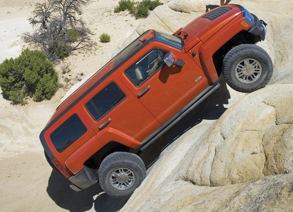
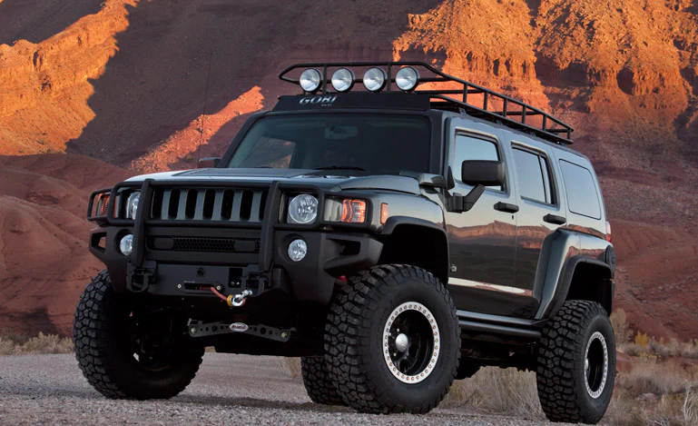
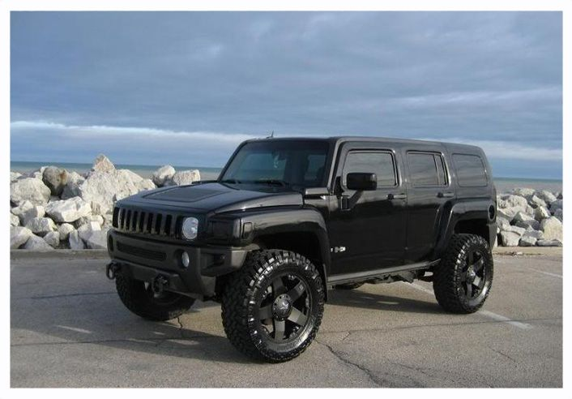

The Hummer H3 is an off-road vehicle that was produced from 2005 to 2010 by General Motors. The smallest model of the Hummer lineup, it was offered as a 5-door SUV or a 4-door pickup truck known as the H3T. Unlike the larger H1 and H2 models, the H3 was not developed by AM General. It was introduced for the 2006 model year, based on a modified GMT355 that underpinned the Chevrolet Colorado/GMC Canyon compact pickup trucks that were also built at GM's Shreveport Operations in Shreveport, Louisiana and the Port Elizabeth plant in South Africa. While mechanically related to the Colorado and Canyon, GM claims they share only 10% of their components, with the chassis modified and reinforced for heavy off-road duties.


Capabilities:
The H3 featured a two-speed, electronically controlled full-time four-wheel drive system that made it for both on-road and off-road driving. Electronic locking front and rear differentials were optional. Like the Hummer H2, the H3 can ford 27 inches (690 mm) of water (tested in depths up to 34 in or 864 mm) at a speed of 5 mph (8.0 km/h) and 20 in (508 mm) of water at a speed of 20 mph (32 km/h). Standard ground clearance with the 31-inch tires was 9.7 in (246 mm) while the approach, departure, and breakover angles were 37.4°, 34.7°, and 22.1° respectively, allowing the H3 to scale a 16-inch (406 mm) vertical wall and negotiate grades of 60% and side slopes of 40%. Front and rear recovery hooks were standard, with an optional trailer hitch and wiring harness. The H3 features a traction control that can use the brakes independently to stop wheelspin and improve traction while adjusting to road conditions. It is also equipped with Stabilitrak stability control and ABS with variable brake force distribution assist.
The optional Adventure or Off Road package included 33-inch tires, off-road shocks, differential lockers and 4:1 low range gearing. These upgrades increased ground clearance, suspension articulation, approach and departure angles, and increased the H3's undercarriage protection.
Maximum towing capacities were 3,000 lb (1,361 kg) for the straight-5 with manual transmission, 4,500 lb (2,041 kg) for the straight-5 with automatic transmission, and 6,000 lb (2,722 kg) for the V8 with automatic transmission. Cargo volume with the second-row seats in the upright position was 25.0 cubic feet (0.71 m3) that could be expanded to a maximum of 62.8 cubic feet (1.78 m3) when the seats are folded down. The V8 models featured the least payload capacity of just over 1,100 lb (499 kg) while the straight-5, manual transmission models were rated at 1,300 lb (590 kg) payload.

HTML Table
| Main |
|
| Gear |
Automatic |
| Number of gears |
4 |
| Transition |
4x4 |
| Maximum speed |
160 kmh |
| own weight |
2.231 kg |
| altogether weight |
2.660kg |
| sizes |
|
| length |
4.782 m |
| width |
1.989 m |
| height |
1.872 m |